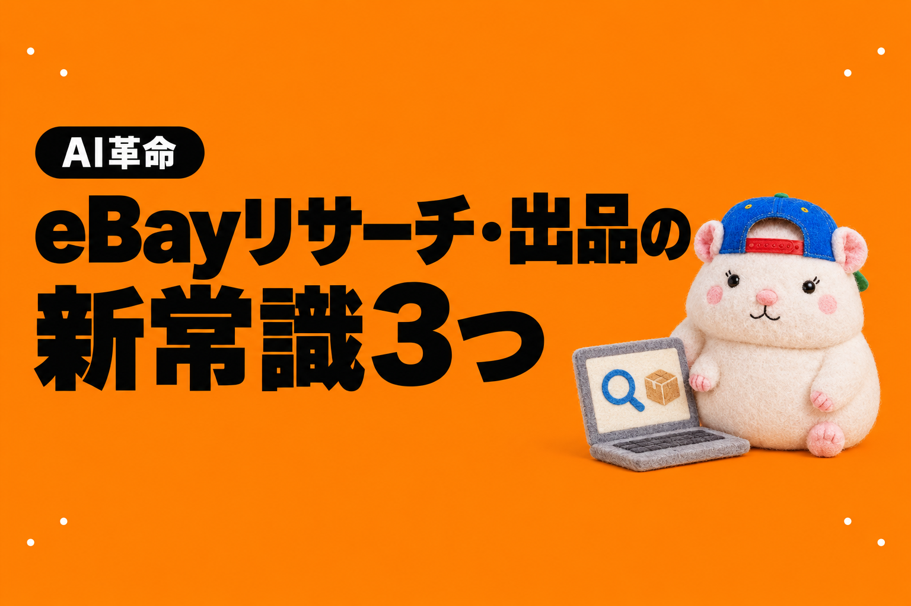

ebay店の店長、チャムです🐹
eBay輸出のリサーチと出品。
結論から書きます。
1日100件をリサーチして出品した場合、
人に頼むと月34万円。
AIなら月1.7万円です。
(店の利益が月100万円の月で計算。人は1件80円+利益の10%、AIはClaude Codeの月110ドルのプラン)
多くの人は、こんなやり方をしているのではないでしょうか。
- 外注さんに、1件いくらで頼む
- リサーチの担当と、出品の担当を分ける
- 件数を増やしたいときは、人を増やす
ぼくも以前は、外注さんに1件いくらで頼んでいました。
いまは、リサーチと出品をAIに任せています。
見えてきた新常識は3つです。
- 件数が増えても、費用は定額
- リサーチと出品を、分けない
- リサーチと出品だけで、終わらない
※金額は、うちの以前の単価と2026年10月10日時点のプランで計算した目安です。同じ金額になることを約束するものではありません。
これまでの常識: 1件○○円で外注する
リサーチと出品を外注するとき、多いのは出来高制です。
1件○○円で払う。
売れた品の利益から、何%かを上乗せすることもあります。
件数を増やしたければ、人を増やす。
うちも以前は、このやり方でした。
リサーチと出品で1件80円、売れたら利益の10%。
外注さんは、21名いました。
このやり方だと、1日100件で月34万円
では、1日100件をリサーチして出品したいとします。
1か月で、3,000件です。
店の利益は、月100万円出たとします。
うちの以前の単価で計算すると、こうなります。
- リサーチと出品: 3,000件 × 80円 = 24万円
- 利益の10%: 100万円 × 10% = 10万円
- 合計: 月34万円
件数を2倍にすれば、リサーチと出品の代金も2倍。
利益が増えれば、利益の上乗せも増えます。
人に頼むと、費用は件数と利益に比例します。
新常識①: 件数が増えても、費用は定額
AIなら、同じ仕事が月1.7万円くらいです。
eBayの店を1つ回すなら、AIはClaude Codeの月110ドルのプランで十分です(2026年10月10日現在)。
1ドル155円で、約1.7万円。
いまは最新のモデル(Claude Opus 5.5)が使えるので、このプランでしっかり回せます。
プログラムを動かす費用は、始めたての店なら無料の範囲におさまることが多いです。
AIのプランは、月額の定額です。
出品を1日100件にしても、200件にしても、金額は変わりません。
人なら月34万円。AIなら月1.7万円。
差は、月32万円。1年で約390万円です。
なぜ増えないのか

教科書 第2版 第19章の図。AIに話しかけて作るのは1回だけ。あとはプログラムが決まった時刻に動きます
AIに1件ずつ「この品を出品して」と頼んでいたら、件数に比例してAIの使用量が増えます。
すぐにプランの上限に届きます。
なので、ぼくの店では、AIは作業そのものをしません。
AIは、作業するプログラムを作るだけ。
毎日、決まった時刻に出品するのは、AIが作ったプログラムです。
プログラムは、eBayの公式API(eBayのデータをプログラムから読み書きする窓口)を通して、出品や在庫・値段の更新をします。
設定はとてもカンタンですが、それすらAIに任せることができます。
プログラムは、何件回しても疲れません。
件数が10倍になっても、AIの使用量はほとんど増えません。
ぼくの店の場合
ぼくは、Claude Codeに月220ドル、ChatGPTのCodexに月110ドル。
合わせて330ドル(約5.1万円)払っています。
でもこれは、レンタルスペースや発信など、ほかの事業もまとめてAIに任せているからです。
eBayの店を1つ回すだけなら、110ドルのプランで足ります。
AIのプランとプログラムを動かす費用、それぞれの中身と抑え方は、『AI × eBay輸出の教科書』の第19章と第21章に書きました。
AIにプログラムを作らせるための発注書キット5本もつけています。

新常識②: リサーチと出品を、分けない
リサーチと出品を外注するとき、多くの人は担当を分けます。
1人ひとりの作業が単純になるので、頼みやすいからです。
でも、分けると、引き継ぎで抜けるものがあります。
「なぜこの商品を選んだのか」という意図です。
どの状態の品を、いくらで、どんな説明で出すか。
リサーチした人の頭の中にあった判断が、出品の担当には届きません。
なので、うちは以前から分けていませんでした。
リサーチした人が、そのまま出品までやる形です。
AIなら、これが最初からできます。
リサーチの担当(AI)が見つけた候補を、同じルールのまま、毎日まとめて出品します。
選んだ理由と出品の中身が、1本の流れでつながります。
新常識③: リサーチと出品だけで、終わらない

リサーチの外注さんに頼むのは、ふつうはリサーチだけです。
でも、AIは月110ドルのプランで、ここまでやります(うちの店の例)。
- リサーチと出品: リサーチしたときのルールのまま、出品まで。意図がずれません
- 在庫管理: 仕入元で売り切れたら、eBayを在庫ゼロにする
- 顧客対応: 判断の要らない返信は、そのまま送る
- 価格調整: 競合と原価に合わせて値段を直す。下限は割らない
- 梱包発送の指示: 売れたら、梱包の担当さんへの指示を出す
- 集計: 店の数字を毎朝1枚にまとめる
- コンサル: 数字を見て、状況分析、次の一手を出す
人間でこれをそろえると、リサーチと出品の担当のほかに、在庫・顧客対応・価格・集計の担当が要ります。
そして、コンサルは月いくらになるか分かりません。
ぼくの9月の作業時間は、45分でした。
正直に書いておくこと
AIの費用が「ぜんぶ増えない」わけではありません。
- プログラムを動かす費用は、件数と回数で少し増えます。うちはプログラムが19本あって、9月は約42ドルでした。始めたての店なら、無料の範囲におさまることが多いです
- ぼく自身のAIの費用(Claude CodeとCodexで月330ドル)は、レンタルスペースや発信の仕事もまとめた金額です。この記事の比較は、eBayの店を1つ回す想定の月110ドルのプランで計算しています
- 梱包と発送は、いまも人間の外注さんです(1件150円から)
もうひとつ。
ぼくの店のAIの使い方は、eBay Japanに問い合わせて、書面で回答をもらった範囲で運用しています。
公式のAPI(eBayのデータをプログラムから読み書きする窓口)を使う。
買い手の個人情報をAIに渡さない。
AIでブラウザからeBayの画面を開かない。
ほかのサービスでも、規約でAIでの自動化が制限されていることがあります。
使うかどうか、どこまで任せるかは、各サービスの規約を確認したうえで、自己責任でお願いします。
まとめ: リサーチと出品の新常識3つ
- 件数が増えても、費用は定額: 人に頼むと、1日100件・利益100万円の月で月34万円。AIなら、Claude Codeの月110ドルのプラン(約1.7万円)で足りる
- リサーチと出品を、分けない: リサーチしたときの意図を、そのまま出品へ。AIなら引き継ぎがない
- リサーチと出品だけで、終わらない: 在庫管理・顧客対応・価格調整・梱包発送の指示・集計・コンサルまで
1件いくらで頼む時代から、定額で任せる時代へ。
分けて頼む時代から、1本の流れで任せる時代へ。
作業を頼む時代から、店ごと任せる時代へ。
あなたの店のリサーチと出品は、まだ1件いくらですか?🐹
▼中の人🏠(レンタルスペース23部屋・売上1.5億)のレンスペ実録

▼ブログ(eBay×レンスペ、全記事まとめ)


▼この店のやり方は、ぜんぶ1冊にまとめてあります
リサーチ・出品・値付け・顧客対応まで、初月利益10万4,286円を出した実店舗の記録と手順を全部書いた教科書です。
読んだその日から、AI社員の作り方をそのまま真似できます。
『AI × eBay輸出の教科書 — 梱包以外、ぜんぶAI』
内容・最新価格は販売ページをご確認ください。